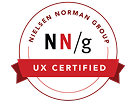
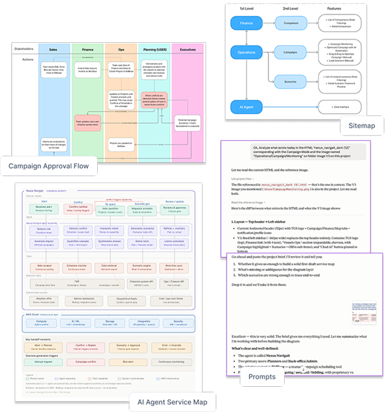
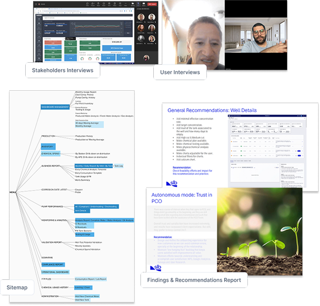
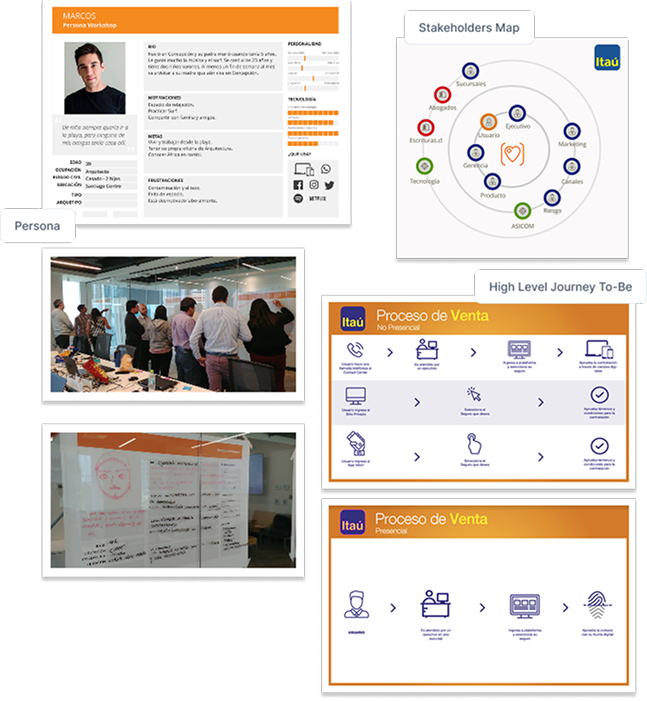

I find where user needs and business goals overlap.
Senior UX/UI Designer with over 10 years across banking, energy, healthcare, and automotive — industries where the workflows are as complex as the stakes. The processes are intricate, the data is dense, and the numbers behind them are real. My objectives are better decisions, faster work, and measurable outcomes.
Experience
Every project starts in a different place. My first move is always to map where things actually stand — technology, research, team dynamics — and build the right strategy from there. I work across the full team, early not late. The fastest path to a good solution is knowing the problem, the people, and the context.

Medecision, TC Energy, Hyatt Hotels, Indiana Hemophilia & Thrombosis Center, Mercedes-Benz, TGS — each one a different industry, a different set of constraints, a different definition of what good looks like. That range is deliberate. Complex problems in unfamiliar domains are where the most interesting design work happens.
Built and led the design department — establishing research processes, implementing the design system, and creating the conditions for evidence-based decision making across the team. Ran co-creation and prioritization workshops with stakeholders, and recruited the people to sustain it.
Designed high-fidelity prototypes across Customer File, Post-Sale, and Sales flows for personal and business segments — translating business needs into product decisions alongside POs and development teams.
Led the end-to-end design of the Insurance cell, taking it from a paper-based process to an omnichannel experience. Also redesigned the Credit Card landing page and ran Discovery research for the Investment cell.
Selected Projects
Navigait
TGS operates a global fleet of seismic survey vessels. Managing it means juggling active surveys, signed contracts, and speculative bids — simultaneously. When anything goes wrong, the schedule doesn't just shift. It cascades. Conflict detection is manual, there's no scenario modeling and no financial visibility.
Achievements: Automatic conflict detection across the campaign schedule. AI agent that generates optimized scenarios with integrated financial modeling. Scenario comparison view that compresses decision time. Iterated throughout based on direct user input.
Challenge: Data required modeling before it could support reliable outputs. Infrastructure had to be built to support the financial calculations. AI integrated into the design workflow as a capability, not just a deliverable.

Hyperlocal BI Platform
The goal is to move stakeholders from reporting to confident, data-backed action — built across three phases: descriptive (what's happening), insightful (why it's happening), and prescriptive (what to do about it).
Achievements: Designed the experience for a complex data visualization platform and delivered an MVP across phases 1 and 2. Iterated on user feedback until the product matched what users actually needed — not just what was initially scoped.
Challenge: Data quality needed ongoing refinement before it could carry the product. Priorities shifted as feedback came in, and Power BI's limitations required workarounds to preserve the intended experience without rebuilding from scratch.

Chemical Program
A global energy company managing chemical programs across oil wells — both remote and manual — needed to consolidate the software supporting implementation, administration, and field supervision into a single platform.
Achievements: Designed a unified monitoring experience for chemical program management across both traditional and remotely controlled wells — consolidating manual and sensor-based indicators into a single, coherent interface.
Challenge: Managing information complexity across multiple user types — each with different needs within the same implementation and monitoring flow — while keeping the interface coherent and the data actionable for all of them.

Omnichannel Insurance
Itaú Bank was mid-digital transformation. The Insurance cell — profitable but inefficient — was generating claims around resolution times, with lengthy manual processes consuming executive time that belonged elsewhere.
Achievements: The redesign reduced the sales process from 5 working days to 7 minutes, cut operational load by 63%, and ranked among the top 3 most impactful projects at the bank that year.
Challenge: Connecting to multiple providers — each with different technical contexts and integration requirements — created significant feasibility constraints throughout the project.
